← Index · ← Previous · Next →
Authors: Riho Rästa, Ivo Heinmaa, Joosep Link, Yusuke Kousaka, Tsuyoshi Kimura, Yoshihiko Ihara, Kenta Kimura, Raivo Stern
Type: experiment · Category: strongly correlated electrons · PDF: https://arxiv.org/pdf/2605.07946v1
Analysis basis: full PDF text, analyzed in chunks
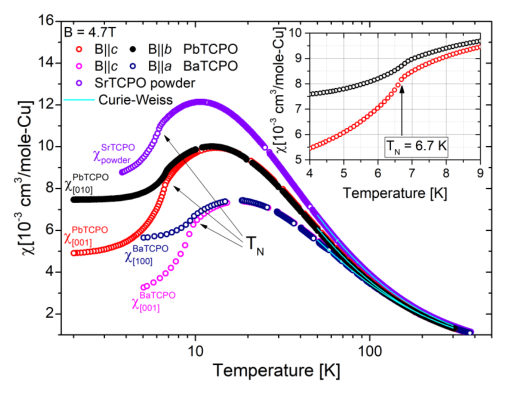
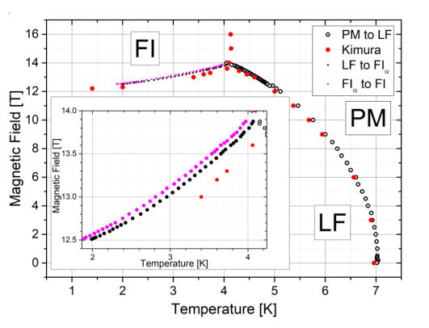
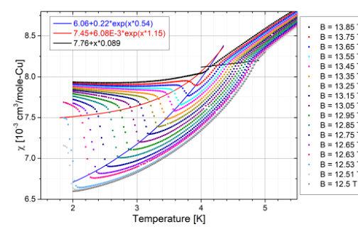
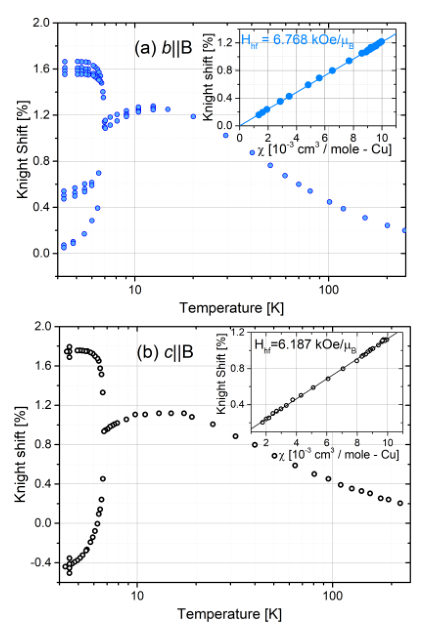
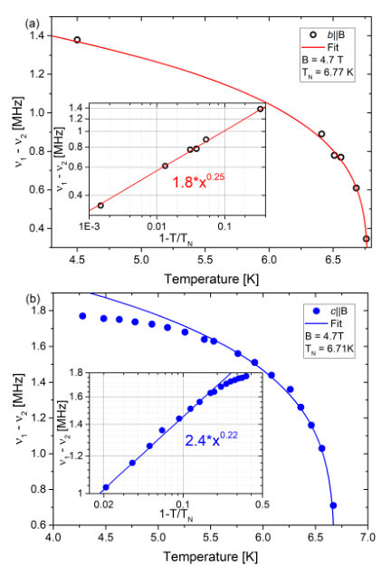
Summary. This paper uses NMR spectroscopy to investigate the microscopic magnetic properties of a family of square-cupola cuprates. It demonstrates how changing the A-site cation (Ba, Pb, Sr) alters the magnetic stacking and local covalency, providing insight into the electronic structure of these charge-transfer insulators.
Why it may be interesting. not directly relevant
Main problem. The study aims to characterize the microscopic magnetism and electronic structure of the chiral square-cupola antiferromagnet Pb(TiO)Cu4(PO4)4 and compare it with its Ba and Sr analogues.
Main result. The researchers found that PbTCPO exhibits enhanced 31P internal fields due to ferroic stacking that prevents interlayer field cancellation, and confirmed the materials are ligand-hole-dominated charge-transfer insulators.
Method. Single-crystal 31P NMR, zero-field 63,65Cu NMR, and crystal-rotation NMR were used alongside point-charge electric-field-gradient calculations.
Model / system. The physical system is the A(TiO)Cu4(PO4)4 family of tetragonal square-cupola cuprates, specifically focusing on the Pb, Ba, and Sr variants.
Key observables. 31P Knight shift, 31P internal field, 63,65Cu internal field, quadrupole frequency, and hyperfine coupling tensors.
Important parameters / regimes. Neel temperature (TN approx 6.7 K), exchange scale (J/kB approx 8.0 K), and Cu hole occupancy (nd approx 0.20).
Assumptions / limitations. Point-charge EFG calculations include Sternheimer corrections to account for the electronic environment.
Figures summary. The notes do not provide a specific description of the figures, but they imply data regarding Knight shift anisotropy, line splitting, and EFG-related parameters.
Paper structure. The paper introduces the square-cupola family, details the NMR and magnetometry experimental setup, presents the 31P NMR results regarding hyperfine coupling and criticality, discusses 63,65Cu ZFNMR results for local fields and EFG, and concludes with a comparison of the A-site substitution effects.
We report a comprehensive NMR study of the chiral square-cupola antiferromagnet Pb(TiO)Cu$_4$(PO$_4$)$_4$ and compare its microscopic hyperfine and local-field parameters with the Ba/Sr analogues in the $A$(TiO)Cu$_4$(PO$_4$)$_4$ family. Above $T_{\rm N}\simeq 6.7$ K, the $^{31}$P Knight shift tracks the bulk susceptibility and yields nearly isotropic transferred hyperfine couplings $H_{\rm hf}^{[010]}=6.77(3)$ and $H_{\rm hf}^{[001]}=6.19(3)$ kOe/$μ_{\rm B}$. Below $T_{\rm N}$, the frequency-swept $^{31}$P spectrum splits into three lines, in contrast to the four-line pattern reported for BaTCPO. The line separation tracks the onset of the static $^{31}$P internal field with a power-law exponent $β\simeq 0.23$, consistent with quasi-two-dimensional criticality. Crystal-rotation $^{31}$P NMR in the ordered state resolves all eight symmetry-related P sites and their site-dependent anisotropy. In the ordered state, zero-field $^{63,65}$Cu NMR gives a Cu-site internal field $B_{\rm int}=14.50(6)$ T and a quadrupole frequency $ν_Q=32.72(5)$ MHz, while point-charge electric-field-gradient calculations including Sternheimer corrections yield an on-site Cu hole occupancy $n_d=0.20(4)$, consistent with a ligand-hole-dominated charge-transfer character. Comparing PbTCPO with BaTCPO and SrTCPO, we find that the transferred hyperfine coupling $H_{\rm hf}$ varies across the series, reflecting changes in local Cu-O-P covalency, whereas the ordered-state $^{31}$P internal field in PbTCPO is $69.5$ mT, considerably higher than in BaTCPO ($35.6$ mT) and SrTCPO ($34.6$ mT). This enhancement is not captured by dipolar terms alone and points to the combined effects of transferred contributions and stacking-dependent cancellation.
Authors: Chenglin Shang, Daye Xu, Bingxian Shi, Xuejuan Gui, Zhongcen Sun, Juanjuan Liu, Jinchen Wang, Hongxia Zhang, Hongliang Wang, Lijie Hao, Peng Cheng
Type: experiment · Category: strongly correlated electrons · PDF: https://arxiv.org/pdf/2605.07540v1
Analysis basis: full PDF text, analyzed in chunks
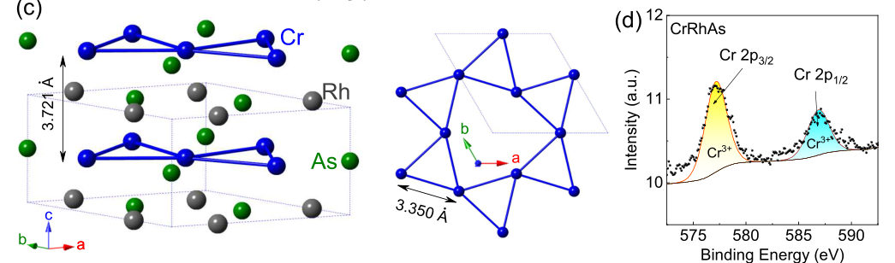
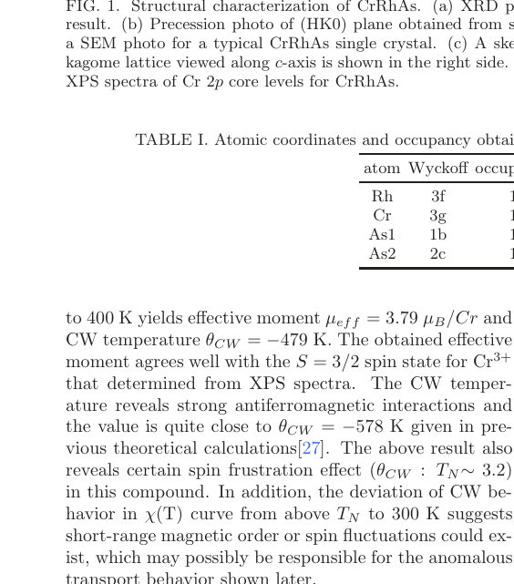
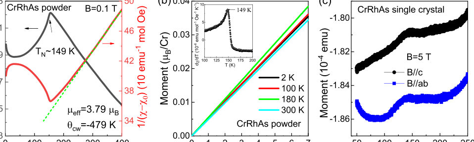
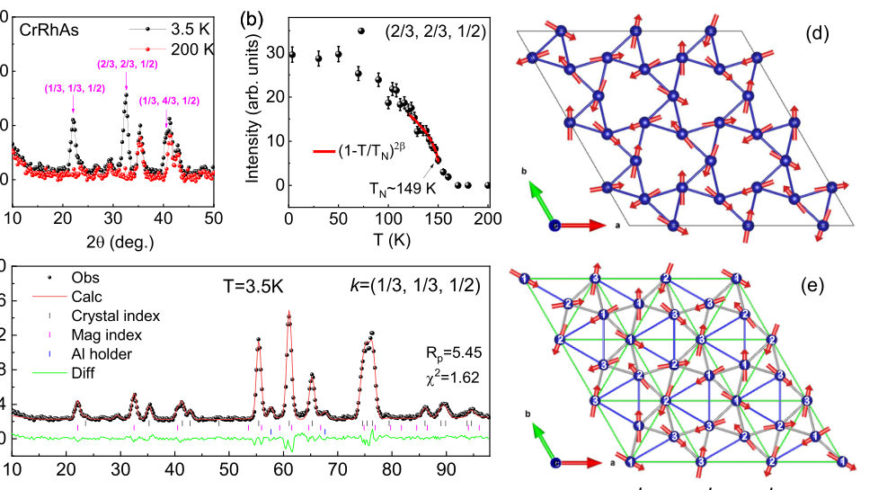
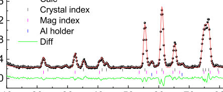
Summary. This paper provides the first experimental characterization of the magnetic and electronic properties of the kagome material CrRhAs. It reveals a noncollinear antiferromagnetic structure and strong electron correlations, specifically highlighting a discrepancy between experimental magnetic coupling and previous theoretical predictions.
Why it may be interesting. not directly relevant
Main problem. The study aims to experimentally investigate the magnetic structure and physical properties of CrRhAs, a predicted kagome metal, to verify previous DFT predictions and understand its electronic correlations.
Main result. The researchers discovered a noncollinear antiferromagnetic structure with ferromagnetic second-nearest-neighbor coupling that contradicts previous DFT predictions, and identified CrRhAs as a strongly correlated kagome metal with a large Kadowaki-Woods ratio.
Method. The study uses powder neutron diffraction for magnetic structure determination, X-ray diffraction and XPS for structural characterization, and PPMS measurements for transport and thermal properties.
Model / system. The system is CrRhAs, a ZrNiAl-type intermetallic compound featuring a distorted Cr-based kagome lattice with noncentrosymmetric hexagonal space group P622m.
Key observables. Néel temperature (TN), magnetic propagation vector (k), Hall coefficient (RH), longitudinal resistivity (rho_xx), Kadowaki-Woods ratio (alpha), and magnetic susceptibility (chi).
Important parameters / regimes. TN = 149 K, theta_CW = -479 K, alpha = 33.9 micro-ohm cm mol^2 K^2/J^2, and propagation vector k = (1/3, 1/3, 1/2).
Figures summary. Fig 1 shows structural characterization including XRD, single-crystal photos, and XPS; Fig 4 displays electrical transport properties including resistivity, magnetoresistance, and Hall coefficients; Fig 5 shows specific heat data.
Paper structure. The paper begins with structural and chemical characterization, moves to the determination of the magnetic structure via neutron diffraction, analyzes magnetic exchange interactions, investigates electronic transport and thermal properties, and concludes with a discussion on electron correlations.
CrRhAs was theoretically proposed to be a kagome metal with unusual magnetic ground states; however, little is known about its magnetic structure and physical properties experimentally. Here, we present an experimental investigation of CrRhAs with ZrNiAl-type structure and a distorted Cr kagome lattice. CrRhAs is an antiferromagnet with TN = 149 K. Powder neutron diffraction analysis reveals a noncollinear antiferromagnetic structure with propagation vector k = (1/3, 1/3, 1/2), which features a ferromagnetic second nearest neighbor coupling in the kagome plane that is different from the prediction in previous density functional theory calculations. Furthermore, CrRhAs exhibits anomalous electrical transport properties which are possibly related to multiband effects and strong spin fluctuations. For the temperature-dependent longitudinal resistivity \r{ho}xx, it is semiconductinglike above TN and becomes metallic below TN . The Hall coefficients exhibit two sign changes near 70 and 300 K. Combined with the results of heat capacity measurements, a large Kadowaki-Woods ratio α = 33.9 μΩ cm mol2 K2/J2 is obtained. The above results suggest CrRhAs is a strongly correlated kagome metal with multiband and noncollinear magnetic structure features.
Authors: Davide Barbiero, Jiří J. L. Vaníček
Type: theory · Category: numerical methods · PDF: https://arxiv.org/pdf/2605.07440v1
Analysis basis: abstract only; PDF text extraction failed or PDF unavailable
Summary. This paper presents a more efficient version of Gaussian wavepacket dynamics (single-Hessian GWD) that maintains the accuracy of more expensive methods while being numerically more stable. By using symplectic integrators, the method avoids energy drift and preserves the underlying geometric structure of the wavepacket manifold. The approach is validated through successful simulations of complex molecular spectra.
Why it may be interesting. It introduces a more efficient, numerically stable, and symplectic-preserving alternative to standard Gaussian wavepacket dynamics, which is crucial for large-scale molecular quantum dynamics simulations.
Main problem. The computational cost of Heller's local harmonic Gaussian wavepacket dynamics (GWD) is high, and traditional methods often suffer from energy drift and lack of symplectic structure conservation.
Main result. The authors derive a symplectic formulation for single-Hessian GWD that conserves the non-canonical symplectic structure and avoids energy drift, achieving accuracy comparable to local harmonic GWD with significantly higher efficiency.
Method. A new symplectic derivation of the equations of motion for single-Hessian GWD, implemented using high-order time-stepping geometric integrators that are time-reversible and norm-conserving.
Model / system. The method is applied to molecular dynamics, specifically the first excited-state surface of ammonia, the photoelectron spectrum of the difluorocarbene anion, and the absorption spectrum of methylamine.
Key observables. Vibronic spectra, photoelectron spectrum, absorption spectrum, and the evolution of wavepacket width.
Important parameters / regimes. The asymptotic error scales as O(hbar); the choice of reference Hessian is identified as a key factor for spectral sensitivity.
Assumptions / limitations. The dynamics are assumed to be bounded in smooth potentials to ensure energy conservation.
Paper structure. The paper provides a symplectic derivation of single-Hessian GWD, introduces high-order geometric integrators, presents analytical expressions for wavepacket evolution, and validates the method through ab initio simulations of ammonia, difluorocarbene anion, and methylamine.
Single-Hessian Gaussian wavepacket dynamics (GWD) significantly reduces the computational burden of Heller's local harmonic GWD, while maintaining comparable accuracy in approximating vibronic spectra. Here, we provide a new, symplectic derivation of the equations of motion of single-Hessian GWD and show that, unlike the local harmonic version, this method conserves the non-canonical symplectic structure on the manifold of Gaussian wavepackets and$-$for bounded dynamics in smooth potentials$-$avoids the drift of energy. Our numerical results suggest that, despite being much more efficient than the local harmonic variant, the single-Hessian GWD exhibits the same $\mathcal{O}(\hbar)$ asymptotic error in averages of observables. To further accelerate numerical simulations, we implement high-order time-stepping geometric integrators that are time-reversible and conserve the norm and symplectic structure exactly, regardless of the time step. In addition, we present explicit expressions for the exact evolution of the width of a single-Hessian Gaussian wavepacket in a general potential, as well as for the exact evolution of the whole wavepacket in a global harmonic potential. Using on-the-fly ab initio Gaussian wavepacket dynamics on the first excited-state surface of ammonia, we numerically confirm the conservation of geometric properties by these integrators and demonstrate that high-order integrators can enhance both accuracy and computational efficiency. We also compute the photoelectron spectrum of the difluorocarbene anion and the absorption spectrum of methylamine, and find that, in comparison with experiment, single-Hessian GWD outperforms global harmonic models and matches the accuracy of local harmonic GWD. Finally, we identify which spectral features are sensitive to the choice of reference Hessian.
Authors: Jie Xiong, Yue Wu, Xuewei Zhou, Peishuo Zhao, Jiaming Zhu
Type: theory · Category: disordered systems and neural networks · PDF: https://arxiv.org/pdf/2605.07279v1
Analysis basis: full PDF text, analyzed in chunks
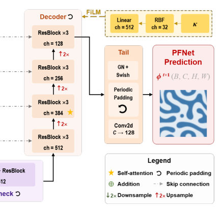
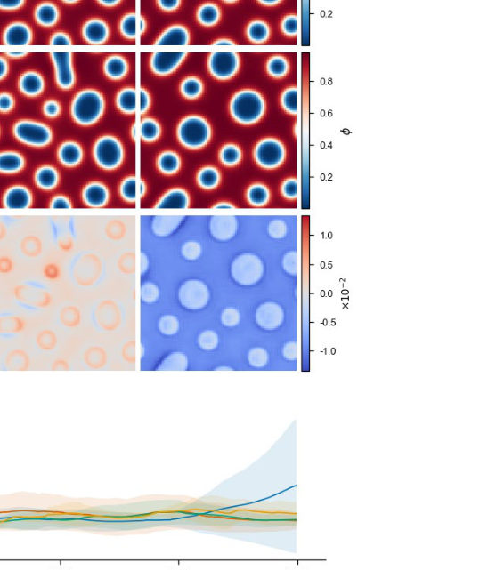
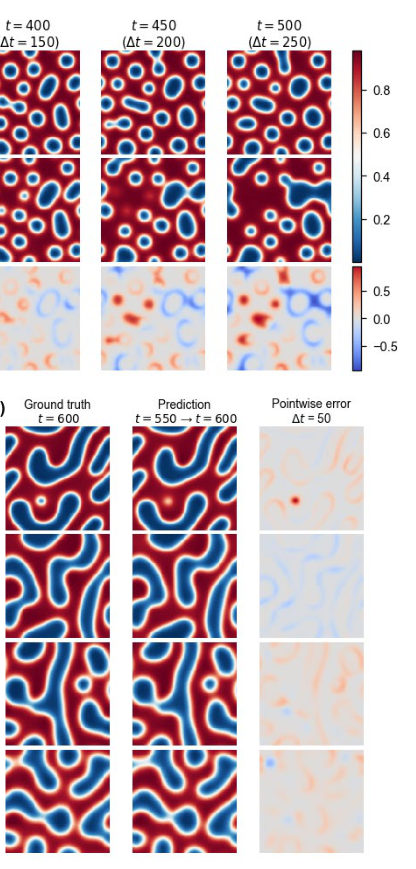
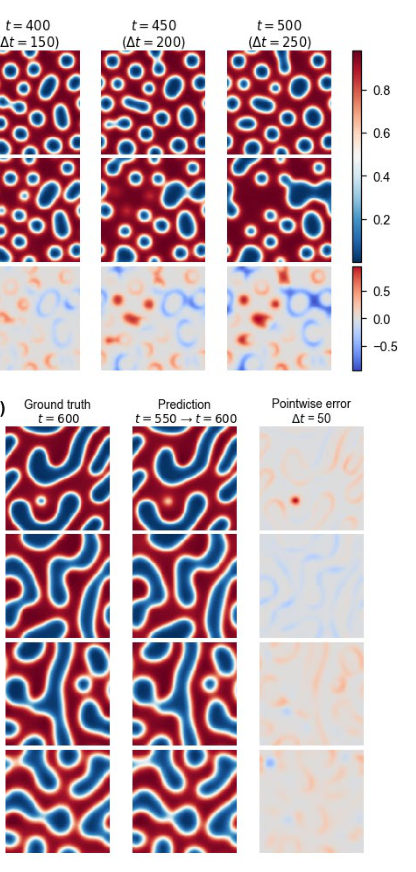
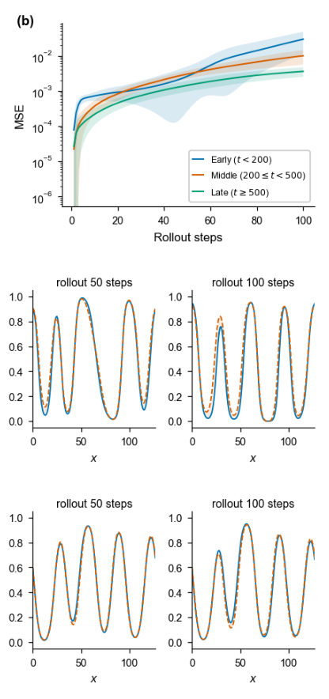
Summary. The paper introduces PFNet, a neural operator framework designed to accelerate phase-field simulations of material microstructure evolution. By incorporating physical constraints like boundary consistency and thermodynamic parameter modulation, it enables stable, long-term predictions across different physical regimes without retraining.
Why it may be interesting. not directly relevant
Main problem. High-fidelity phase-field simulations of microstructural evolution are computationally expensive for long-time horizons and broad parameter spaces, and existing neural operators struggle with long-term stability and physical constraints.
Main result. The PFNet framework achieves accurate, stable, and transferable one-step predictions and long-horizon autoregressive rollouts for both Cahn-Hilliard and martensitic transformation dynamics.
Method. A physics-informed neural operator (PFNet) using a diffusion-inspired U-Net architecture with periodic padding, entropy-based state conditioning, and FiLM-based thermodynamic parameter modulation.
Model / system. Energy-dissipative microstructure dynamics governed by phase-field models, specifically Cahn-Hilliard (conserved) and Allen-Cahn (non-conserved) gradient flows driven by Ginzburg-Landau free-energy functionals.
Key observables. Phase-field variables (concentration/order parameters), chemical potential, interfacial morphology, and Shannon entropy of the state.
Important parameters / regimes. Gradient-energy coefficient (kappa), composition (phi), mobility (M), and time (delta t).
Assumptions / limitations. The dynamics follow a dissipative gradient-flow structure; errors are concentrated near diffuse interfaces and topology-changing regions.
Figures summary. Figure 1 shows the PFNet architecture; Figure 2 illustrates single-step Cahn-Hilliard predictions; Figure 3 displays long-horizon rollouts and error maps; Figure S2 shows temporal evolution of concentration fluctuations.
Paper structure. The paper introduces the computational bottleneck of phase-field modeling, presents the PFNet architecture and its physics-informed features, demonstrates performance on Cahn-Hilliard coarsening, extends the framework to multi-channel martensitic transformations, and discusses error localization and generalization.
Phase-field simulations provide mechanistic descriptions of microstructure evolution, but repeated high-fidelity integration over long horizons and broad parameter spaces remains computationally expensive. We present PFNet, a physics-informed neural operator framework that advances microstructural states by learning conditional evolution operators rather than direct correlations. PFNet combines a diffusion-inspired U-Net with periodic padding, entropy-based state conditioning and thermodynamic-parameter modulation to encode boundary consistency, instantaneous ordering state and changes in the free-energy landscape. For Cahn-Hilliard coarsening, PFNet achieves accurate one-step prediction and stable autoregressive rollouts across composition, gradient-energy coefficient, coarsening stage and morphology class, with errors concentrated near diffuse interfaces and topology-changing regions. The same framework extends to a four-channel martensitic-transformation benchmark without martensite-specific redesign. These results indicate that physics-informed operator learning can provide transferable surrogates for phase-field dynamics and broader energy-dissipative dynamical systems.
Authors: Aditi Awasthi, Sayam Sethi, Sahil Khan, Gokul Subramanian Ravi, Jonathan Mark Baker
Type: theory · Category: quantum information and computing · PDF: https://arxiv.org/pdf/2605.07983v1
Analysis basis: abstract only; PDF text extraction failed or PDF unavailable
Summary. This paper demonstrates that treating magic state production as a stochastic process rather than a deterministic one allows for much more efficient resource allocation in fault-tolerant quantum computing. By accounting for the 'demand smoothing' effect, architects can significantly reduce the number of required factories and the overall space-time volume of quantum programs.
Why it may be interesting. not directly relevant
Main problem. Current deterministic methods for provisioning magic-state factories in fault-tolerant quantum computing (FTQC) either over-provision resources for worst-case scenarios or under-provision for average demand, leading to inefficient space-time volume usage.
Main result. Stochastic-aware provisioning can reduce space-time volume by up to 27% and factory requirements by up to 30% by accounting for the demand-smoothing effects of non-deterministic magic state production.
Method. The authors developed a simulation framework that couples circuit scheduling with various stochastic magic state production models (distillation, cultivation, and Rz synthesis) to quantify the impact of non-determinism.
Model / system. The study focuses on fault-tolerant quantum computing architectures utilizing quantum error correction (QEC) codes augmented with magic states produced via distillation, cultivation, or Rz synthesis.
Key observables. Space-time volume, peak per-cycle resource demand, total execution time, and factory allocation requirements.
Important parameters / regimes. Magic state production mechanisms (distillation, cultivation, Rz synthesis), stochasticity of production, and factory count.
Assumptions / limitations. The analysis assumes that magic state production is a stochastic process that impacts the availability of resources for circuit execution.
Paper structure. The paper introduces the problem of deterministic vs. stochastic provisioning, presents a new simulation framework, analyzes the dual effect of non-determinism (price vs. payoff), compares different preparation mechanisms, and concludes with recommendations for standard resource planning.
A promising approach to achieving scalable fault-tolerant quantum computation is the use of quantum error correction (QEC) codes augmented with magic states i.e. resource states produced via distillation, cultivation, or $R_z$ synthesis and teleported into the circuit as needed. Because magic-state production dominates the space-time volume of fault-tolerant programs, system architects must decide how many production units to allocate. Current approaches rely on deterministic analysis that either provisions for worst-case peak demand (wasting valuable qubit resources on factories that are never simultaneously utilized) or assumes average demand, which increases execution time. In this work, we build a simulation framework that couples circuit scheduling with different stochastic magic state production models, and use it to quantify the impact of non-determinism on circuit execution. We show that non-determinism has a dual effect that deterministic models cannot capture: it inflates total execution time (the price), while deflating peak per-cycle resource demand (the payoff). For distillation-based architectures, this demand smoothing shifts the space-time-optimal provisioning point: fewer factories are needed to minimize space-time volume than deterministic analysis predicts. Across benchmarks, stochastic-aware provisioning reduces space-time volume by up to 27% compared to the deterministic optimum for distillation, while requiring up to 30% fewer factories. We characterize these effects across each preparation mechanism, map the resulting design-space tradeoffs, and demonstrate that static resource estimation systematically mis-characterizes the cost of fault-tolerant execution. Our results establish that stochastic-aware analysis is necessary for right-sizing the factory allocations and should replace deterministic heuristics as the standard methodology for FTQC resource planning.
Authors: Younsik Kim, Changyoung Kim
Type: both · Category: disordered systems and neural networks · PDF: https://arxiv.org/pdf/2605.07819v1
Analysis basis: abstract only; PDF text extraction failed or PDF unavailable
Summary. This paper introduces a new deep learning framework for denoising scientific spectroscopic data while providing reliable error bars. By quantifying predictive uncertainties, the method allows for rigorous downstream analysis, such as determining superconducting gap parameters in cuprates. This transforms deep learning from a simple visualization tool into a mathematically rigorous framework for scientific data extraction.
Why it may be interesting. not directly relevant
Main problem. Deep learning applications in scientific research often lack quantitative reliability and uncertainty quantification, making it difficult to trust denoised results for rigorous analysis.
Main result. The authors developed a probabilistic denoising framework that provides both denoised signals and element-wise predictive uncertainties, which can be successfully propagated into superconducting gap analyses.
Method. A probabilistic denoising framework designed to extract signals and uncertainties simultaneously from noisy data, tested on ARPES and XRD datasets.
Model / system. The framework is demonstrated on three-dimensional angle-resolved photoemission spectroscopy (ARPES) data of a cuprate superconductor and two-dimensional X-ray diffraction (XRD) data.
Key observables. Denoised spectral features, element-wise predictive uncertainties, and superconducting gap parameters.
Important parameters / regimes. Poisson-distributed noise with an average count of 0.02 electrons per voxel.
Assumptions / limitations. The noise in the ARPES data follows a Poisson distribution.
Paper structure. The paper introduces a probabilistic denoising framework, demonstrates its efficacy on 3D ARPES data of cuprate superconductors, shows the propagation of uncertainties into gap analysis, and validates the method using 2D XRD data.
While deep learning offers powerful capabilities for scientific research, its application is often hindered by a lack of quantitative reliability. To address this, we introduce a probabilistic denoising framework that simultaneously extracts denoised signals and element-wise predictive uncertainties from noisy data. We demonstrate this approach on three-dimensional angle-resolved photoemission spectroscopy data, showing that the model reliably recovers the spectral features of a cuprate superconductor from Poisson-distributed noise with an average count of only 0.02 electrons per voxel. Crucially, we show that these predicted uncertainties can be propagated into subsequent superconducting gap analyses, enabling quantitative parameter extraction with scientifically meaningful error bars. Furthermore, we validate the broad applicability of our approach by successfully extending it to two-dimensional X-ray diffraction data. Ultimately, this approach establishes uncertainty-aware deep learning not merely as a visualization tool, but as a rigorous framework for scientific data analysis.
Authors: Clarissa Lauditi, Cengiz Pehlevan, Blake Bordelon
Type: theory · Category: disordered systems and neural networks · PDF: https://arxiv.org/pdf/2605.07870v1
Analysis basis: abstract only; PDF text extraction failed or PDF unavailable
Summary. This paper provides a theoretical framework to track how the eigenvalues of neural network weights evolve during training. It shows that certain scaling regimes ($\mu$P) allow for stable learning dynamics across different network widths, whereas others are highly sensitive to width. The study also distinguishes between simple tasks and complex tasks like language modeling based on how the spectral bulk responds.
Why it may be interesting. not directly relevant
Main problem. Understanding the evolution of the spectral properties (bulk and outliers) of hidden weights in wide neural networks during training.
Main result. The authors develop a two-level dynamical mean-field theory that predicts how outliers evolve and demonstrate that the $\mu$P scaling allows for width-consistent hyperparameter transfer, whereas NTK parameterization does not.
Method. Development of a two-level dynamical mean-field theory (DMFT) to track both bulk and outlier spectral dynamics in spiked ensembles.
Model / system. Wide neural networks, specifically infinite-width nonlinear networks in mean-field/$\mu$P scaling and deep linear networks in the proportional high-dimensional limit.
Key observables. Hidden-weight spectra, bulk and outlier spectral dynamics, and the leading NTK mode growth.
Important parameters / regimes. Training time, network width, output scale, initialization variance, and the ratio of width, input dimension, and sample size.
Assumptions / limitations. The framework assumes spiked ensembles where spike directions remain statistically dependent on the random bulk; it also considers the infinite-width and proportional high-dimensional limits.
Paper structure. The paper introduces a two-level DMFT, applies it to nonlinear $\mu$P scaling and deep linear networks, compares $\mu$P vs NTK parameterization, and extends the analysis to tasks with large output channels using a toy model.
We study the evolution of hidden-weight spectra in wide neural networks trained by (stochastic) gradient descent. We develop a two-level dynamical mean-field theory (DMFT) that jointly tracks bulk and outlier spectral dynamics for spiked ensembles whose spike directions remain statistically dependent on the random bulk. We apply this framework to two settings: (1) infinite-width nonlinear networks in mean-field/$μ$P scaling and (2) deep linear networks in the proportional high-dimensional limit, where width, input dimension, and sample size diverge with fixed ratios. Our theory predicts how outliers evolve with training time, width, output scale, and initialization variance. In deep linear networks, $μ$P yields width-consistent outlier dynamics and hyperparameter transfer, including width-stable growth of the leading NTK mode toward the edge of stability (EoS). In contrast, NTK parameterization exhibits strongly width-dependent outlier dynamics, despite converging to a stable large-width limit. We show that this bulk+outlier picture is descriptive of simple tasks with small output channels, but that tasks involving large numbers of outputs (ImageNet classification or GPT language modeling) are better described by a restructuring of the spectral bulk. We develop a toy model with extensive output channels that recapitulates this phenomenon and show that edge of the spectrum still converges for sufficiently wide networks.
Authors: Chris Elliott, Daniel Murfet
Type: theory · Category: disordered systems and neural networks · PDF: https://arxiv.org/pdf/2605.07980v1
Analysis basis: abstract only; PDF text extraction failed or PDF unavailable
Summary. This paper introduces a theory of susceptibilities to interpret how changes in input data affect the internal state of neural networks. By linking Bayesian inference to the fluctuation-dissipation theorem, it provides a way to map data perturbations to structural changes in the model. This offers a linearized approach to the 'patterning problem' in machine learning.
Why it may be interesting. not directly relevant
Main problem. The paper aims to provide a unified framework for interpreting neural networks using the theory of susceptibilities to understand how data perturbations affect model observables.
Main result. The authors establish that the susceptibility of an observable to data perturbations is equivalent to a posterior covariance via the fluctuation-dissipation theorem, and show that the susceptibility matrix acts as a Jacobian for mapping data distributions to structural coordinates.
Method. The work uses statistical-mechanical foundations, specifically applying the fluctuation-dissipation theorem and linear response theory to Bayesian inference in neural networks.
Model / system. The system is a Bayesian neural network viewed through the lens of statistical mechanics, where model parameters are treated as degrees of freedom in a posterior distribution.
Key observables. Posterior expectation of observables (phi), per-sample losses (influence matrix), and component-localized observables (structural susceptibility matrix).
Important parameters / regimes. The inverse temperature beta (n*beta scaling) and the mapping between data distributions and structural coordinates.
Assumptions / limitations. The framework assumes a Bayesian learning setting where the posterior distribution is well-defined and subject to small data perturbations.
Paper structure. The paper begins with a motivation from statistical-mechanical foundations, followed by a detailed exposition of susceptibility theory, empirical estimators, and finally discusses connections to the geometry of the loss landscape.
These notes introduce the theory of susceptibilities as developed in [arXiv:2504.18274, arXiv:2601.12703] for interpreting neural networks. The susceptibility of an observable $φ$ to a data perturbation is defined as a derivative of a posterior expectation, which by the fluctuation--dissipation theorem equals a posterior covariance. Different choices of $φ$ yield different objects: per-sample losses give the influence matrix (the Bayesian influence function of [arXiv:2509.26544]), while component-localized observables give the structural susceptibility matrix that pairs model components with data patterns. The susceptibility matrix is (up to a factor of $nβ$) the Jacobian of the map from data distributions to structural coordinates; its pseudo-inverse provides a linearized solution to the patterning problem of [arXiv:2601.13548]: finding data perturbations that produce a desired structural change. We motivate the theory from its statistical-mechanical foundations, then give a detailed exposition of susceptibilities, their empirical estimators, and their connection to the geometry of the loss landscape.
Authors: Shinichi Inoue, Shotaro Shirai, Shuhei Tamate, Shu Watanabe, Kohei Matsuura, Rui Li, Yasunobu Nakamura
Type: theory · Category: quantum information and computing · PDF: https://arxiv.org/pdf/2605.07868v1
Analysis basis: abstract only; PDF text extraction failed or PDF unavailable
Summary. The paper proposes moving the cross-resonance gate operation from the traditional straddling regime to a far-detuned regime to mitigate frequency collisions in transmon processors. By treating frequency allocation as a linear programming problem, the authors demonstrate that this approach allows for much tighter qubit-frequency spreads. This provides a scalable pathway for designing large-scale, fixed-frequency superconducting quantum processors.
Why it may be interesting. This is highly relevant for researchers in quantum computing and open quantum systems as it addresses a fundamental hardware scaling bottleneck (frequency crowding) using control-theory-inspired optimization and pulse-level analysis.
Main problem. Frequency crowding in fixed-frequency transmon processors limits scalability because the conventional straddling regime for cross-resonance (CR) gates makes the system highly susceptible to frequency collisions.
Main result. The authors propose a 'far-detuned regime' for CR gates that significantly reduces frequency collisions and provide a linear programming optimization method for optimal frequency allocation in large lattices.
Method. The study uses a numerical method accurate under high-intensity, smoothly ramped microwave drives, combined with systematic parameter sweeps and Monte Carlo yield analysis.
Model / system. The system consists of fixed-frequency transmon qubits arranged in a square lattice, specifically analyzed up to a 1024-qubit scale.
Key observables. Two-qubit-gate error threshold and collision-free yield.
Important parameters / regimes. Qubit-frequency spread (sigma_f), frequency detuning (straddling vs. far-detuned regimes), and microwave drive intensity/ramping.
Assumptions / limitations. The analysis assumes a unit-cell lattice with periodic boundary conditions for the optimization framework.
Paper structure. The paper introduces the problem of frequency crowding, proposes the far-detuned CR gate regime, presents a numerical method for collision evaluation, details a linear programming approach for frequency allocation, and concludes with a Monte Carlo yield analysis for large-scale lattices.
Frequency crowding remains a major obstacle to scaling fixed-frequency transmon processors. Among the widely used all-microwave two-qubit gates, the cross-resonance (CR) gate is particularly sensitive to qubit-frequency spread because the conventional straddling regime condition constrains assignable qubit frequencies tightly and makes the system susceptible to frequency collisions. Here, we propose and analyze the CR gate outside the straddling regime, which we refer to as the far-detuned regime, and evaluate frequency collisions using a numerical method that remains accurate under high-intensity, smoothly ramped microwave drives. Based on this analysis, we perform systematic parameter sweeps and provide collision-free conditions that define designable frequency regions in which qubit frequencies can be assigned consistently with surrounding qubit frequencies. Furthermore, we formulate frequency allocation as a linear programming optimization on a unit-cell lattice with periodic boundary conditions to obtain an optimal allocation. We demonstrate that far-detuned designs significantly reduce collisions compared with designs in the straddling regime. Monte Carlo yield analysis indicates that 10% collision-free yield for a 1024-qubit square lattice at a 0.1% two-qubit-gate error threshold requires $σ_{\mathrm{f}}/2π\le 6.8~\mathrm{MHz}$. Our findings suggest that this is feasible with an approximately twofold reduction in the state-of-the-art qubit-frequency spread.
Authors: Gabriel Cuomo, Ross Dempsey, Andrei Katsevich, Igor R. Klebanov, Ilia V. Kochergin, Silviu S. Pufu, Benjamin T. Søgaard
Type: theory · Category: other · PDF: https://arxiv.org/pdf/2605.08042v1
Analysis basis: abstract only; PDF text extraction failed or PDF unavailable
Summary. This paper solves three long-standing puzzles in the two-flavor Schwinger model related to different vacuum angles and mass asymmetries. By combining analytical integrability methods with lattice numerical simulations, the authors characterize the phase diagram and particle spectrum of this 1+1D gauge theory.
Why it may be interesting. not directly relevant
Main problem. The paper aims to resolve three specific physical puzzles regarding the two-flavor Schwinger model (1+1D QED) originally posed by Sidney Coleman in 1976.
Main result. The authors demonstrate spontaneous breaking of charge conjugation symmetry and absence of confinement at theta=pi, identify a level crossing between isosinglet particles at theta=0, and provide new estimates for isospin-breaking effects.
Method. The study employs a combination of two-loop Renormalization Group, integrability methods, and numerical simulations using the lattice Hamiltonian.
Model / system. The two-flavor Schwinger model, which is 1+1-dimensional Quantum Electrodynamics coupled to two charged massive fermions.
Key observables. Mass gap, charge conjugation symmetry breaking, level crossing of isosinglet particles, and isospin-breaking effects.
Important parameters / regimes. Fermion masses (m), gauge coupling (g), and the vacuum angle (theta).
Assumptions / limitations. The analysis focuses on the regimes of equal and unequal fermion masses, specifically looking at the strong coupling limit (m << g).
Paper structure. The paper introduces the historical context of Coleman's puzzles, presents analytical solutions for the theta=pi and theta=0 cases using RG and integrability, provides numerical verification via lattice Hamiltonian, and concludes with estimates for isospin-breaking effects.
In his 1976 paper "More about the massive Schwinger model", Coleman introduced $1+1$-dimensional Quantum Electrodynamics coupled to two charged massive fermions. By applying Abelian bosonization, he elucidated much of the physics of this two-flavor Schwinger model, but he listed three puzzles at the end of his paper. We present new analytical and numerical calculations to solve Coleman's three puzzles and thereby deepen our understanding of this model. These puzzles pertain to the theory with equal fermion masses at $θ= 0$ and at $θ= π$, as well as the size of isospin-breaking effects when the fermion masses are unequal. For the puzzle at $θ= π$, the solution is related to the structure of the zero-temperature phase diagram arXiv:2305.04437: for equal fermion masses $m$, the model exhibits spontaneous breaking of charge conjugation symmetry and absence of confinement for any value of the gauge coupling $g$, so that there is a smooth interpolation from weak to strong coupling. Using two-loop Renormalization Group and integrability methods, we show that the mass gap behaves as $\sim m e^{-0.111 g^2/m^2}$ in the strong coupling regime $m\ll g$. Our numerical results using the lattice Hamiltonian are in good agreement with this behavior. For the puzzle at $θ= 0$, the solution is related to a level crossing between two isosinglet particles with different discrete quantum numbers; we demonstrate the necessity of such a crossing by comparing integrability and weak coupling calculations, and we also exhibit the crossing numerically. Finally, we provide a new estimate for the size of isospin-breaking effects caused by different fermion masses at strong coupling.
Authors: T. Vibert, D. Sénéchal
Type: theory · Category: strongly correlated electrons · PDF: https://arxiv.org/pdf/2605.06923v1
Analysis basis: abstract only; PDF text extraction failed or PDF unavailable
Summary. This paper explores how topology emerges in twisted bilayer cuprates using the Hubbard model. It demonstrates that the system's topological properties, specifically the Chern number, change drastically depending on whether the system is electron-doped or hole-doped. The findings are supported by the identification of chiral edge states.
Why it may be interesting. not directly relevant
Main problem. Investigating the emergence of nontrivial topology and Chern numbers in a twisted bilayer cuprate system.
Main result. The topological character is highly sensitive to doping, with a Chern number of +/- 8 found in the electron-doped regime and a vanishing Chern number in the hole-doped regime.
Method. Numerical analysis of the Hubbard model in the weak-interaction regime, including edge state and chirality analysis in finite-width geometry.
Model / system. A twisted cuprate bilayer described by the Hubbard model.
Key observables. Chern number, edge states, and chirality.
Important parameters / regimes. Interaction strength U/t = 3.85, doping level (electron-doped vs. hole-doped), and finite-width geometry.
Assumptions / limitations. Weak-interaction regime (U/t = 3.85) and the use of the Hubbard model to represent the bilayer.
Paper structure. The paper investigates the Hubbard model for twisted cuprates, analyzes the dependence of the Chern number on doping, and verifies topology via edge state analysis.
We investigate the emergence of nontrivial topology in a twisted cuprate bilayer described by the Hubbard model in the weak-interaction regime. Our results show that the topological character depends sensitively on the doping level. For $U/t=3.85$, the Chern number assumes a value of $\pm 8$ in the electron-doped case, whereas it vanishes (0) in the hole-doped regime. The presence of nontrivial topology is further supported by an analysis the associated edge states and their chirality in a finite-width geometry, while keeping full correlations.
Authors: Ayumi Ukai
Type: theory · Category: statistical mechanics · PDF: https://arxiv.org/pdf/2605.07410v1
Analysis basis: full PDF text, analyzed in chunks
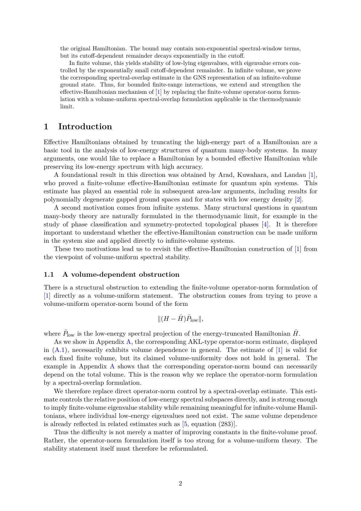
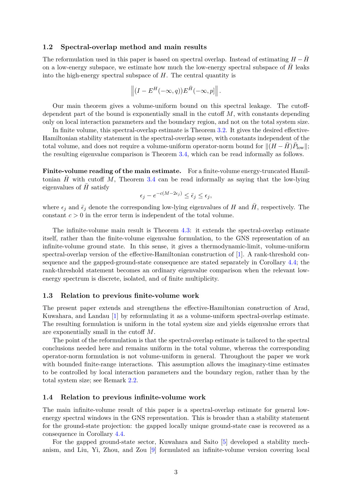
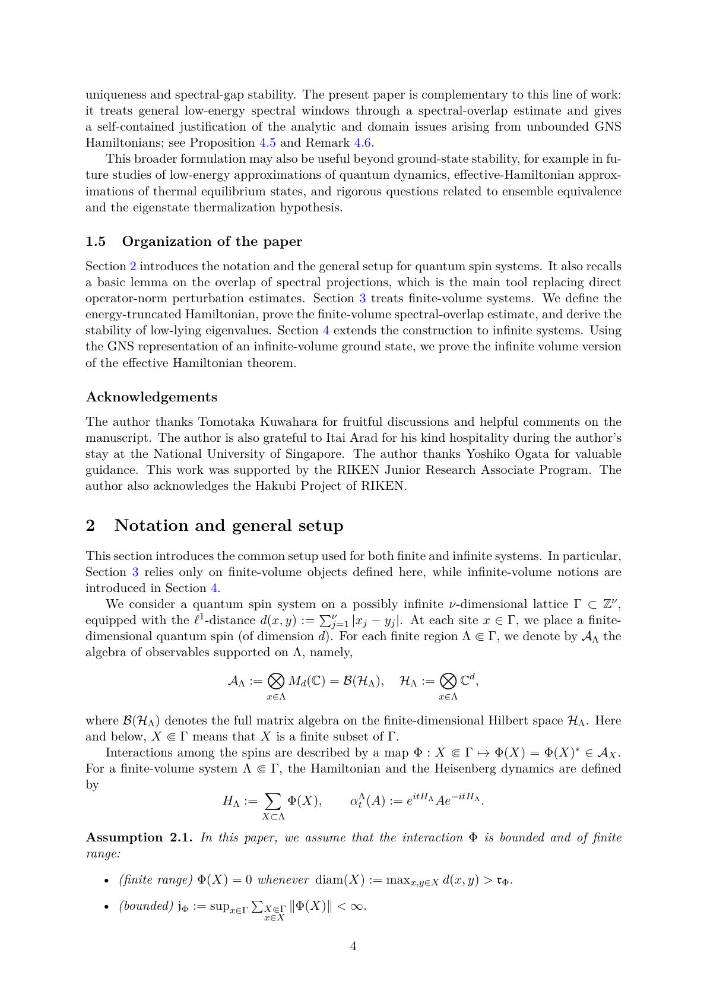
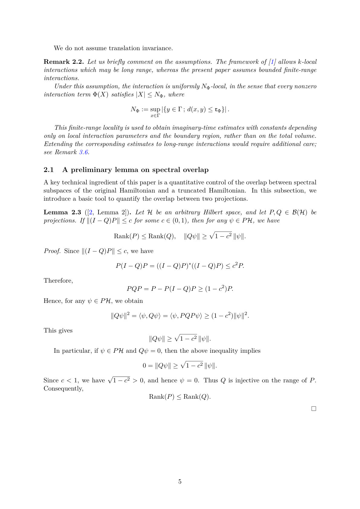
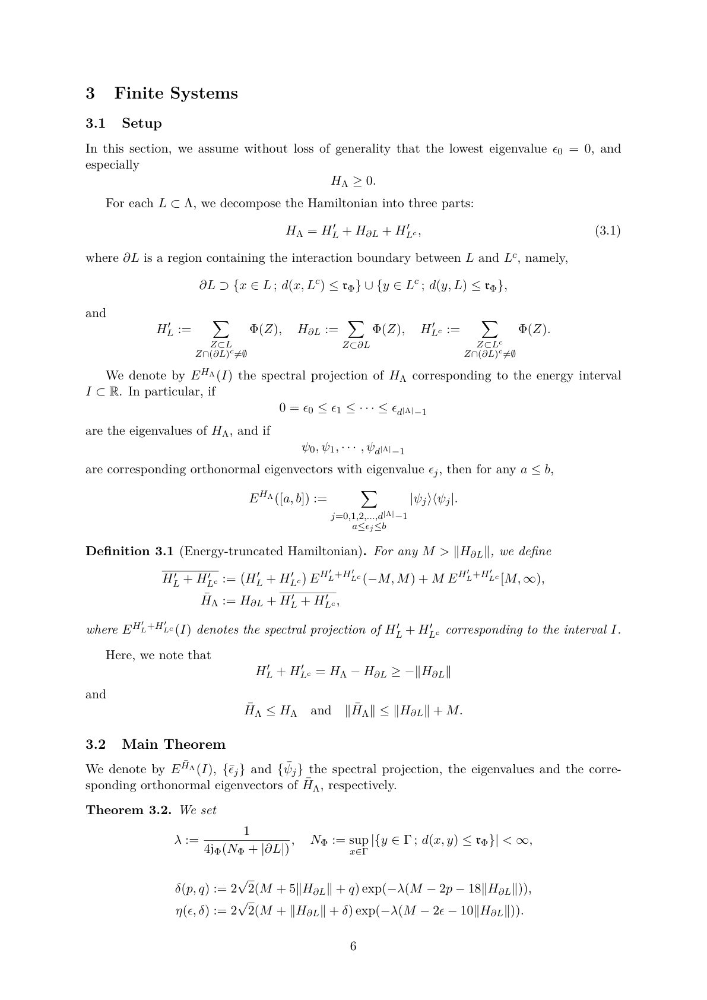
Summary. This paper provides a new mathematical framework for constructing effective Hamiltonians that remain valid in the thermodynamic limit. By replacing operator-norm estimates with a volume-uniform spectral-overlap approach, it proves that energy-truncated Hamiltonians accurately capture the low-energy physics of infinite-volume quantum spin systems.
Why it may be interesting. not directly relevant
Main problem. The difficulty of extending effective-Hamiltonian constructions from finite-volume systems to the thermodynamic limit due to volume-dependent obstructions in standard operator-norm formulations.
Main result. The paper proves a volume-uniform spectral-overlap theorem that ensures the stability of low-energy spectral subspaces and eigenvalues in the thermodynamic limit for bounded, finite-range quantum spin systems.
Method. The author employs a spectral-overlap method to replace the failed operator-norm approach, utilizing the GNS representation, spectral functional calculus, and Hadamard-type off-diagonal estimates.
Model / system. Bounded, finite-range quantum spin systems on a nu-dimensional lattice (possibly infinite) with finite-dimensional spins at each site.
Key observables. Spectral overlap (leakage of low-energy subspaces), low-lying eigenvalues, and ground state fidelity/overlap.
Important parameters / regimes. Energy truncation threshold (M), interaction range, spectral gap (Delta), and the decay parameter (lambda).
Assumptions / limitations. Interactions must be bounded and of finite range; the results for the infinite-volume limit rely on the GNS representation of a ground state.
Paper structure. The paper first establishes a counterexample showing the failure of operator-norm uniformity, then develops finite-volume stability results using spectral-overlap, and finally extends these bounds to the infinite-volume limit via the GNS construction.
We prove a volume-uniform effective-Hamiltonian theorem for bounded finite-range quantum spin systems on possibly infinite lattices. For any finite target region, we construct an energy-truncated Hamiltonian and prove a volume-uniform spectral-overlap bound controlling the leakage of its low-energy spectral subspace into the high-energy spectral subspace of the original Hamiltonian. The bound may contain non-exponential spectral-window terms, but its cutoff-dependent remainder decays exponentially in the cutoff. In finite volume, this yields stability of low-lying eigenvalues, with eigenvalue errors controlled by the exponentially small cutoff-dependent remainder. In infinite volume, we prove the corresponding spectral-overlap estimate in the GNS representation of an infinite-volume ground state. Thus, for bounded finite-range interactions, we extend and strengthen the effective-Hamiltonian mechanism of Arad, Kuwahara, and Landau by replacing the finite-volume operator-norm formulation with a volume-uniform spectral-overlap formulation applicable in the thermodynamic limit.
Papers from cond-mat.mtrl-sci, mes-hall, other, soft, supr-con. These archives are de-prioritized — they appear at the end regardless of relevance score.
Authors: Yusuke Koyama, Yuki Kawaguchi
Type: theory · Category: other · PDF: https://arxiv.org/pdf/2605.07435v1
Analysis basis: full PDF text, analyzed in chunks
Topic relevance: 🔥 correlated / nonlocal dissipation 4/5 · non-equilibrium dynamics 3/5 · driven-dissipative phase transition 2/5 · methods for driven-dissipative 2/5 · spintronics-quantum-optics interface 2/5
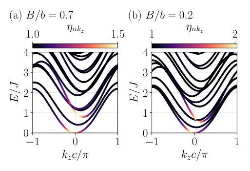
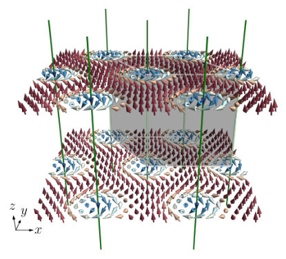
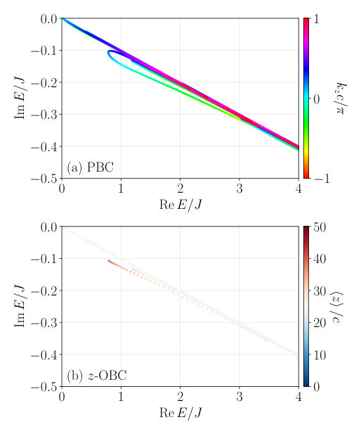
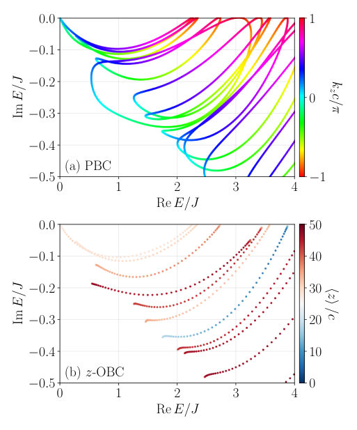
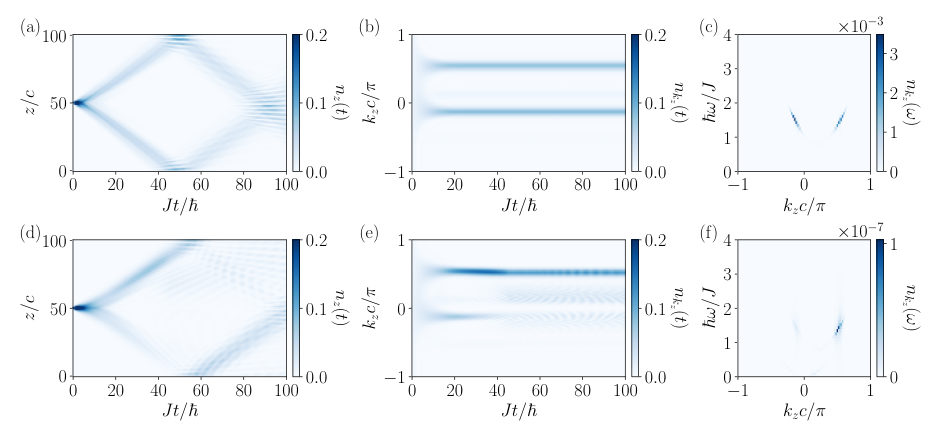
Summary. This paper explores how different types of magnetic damping lead to non-Hermitian topological features in magnon excitations within skyrmion strings. It demonstrates that both local and nonlocal damping can trigger the Non-Hermitian Skin Effect, causing spin waves to localize at specific boundaries or propagate in preferred directions. This work connects classical dissipative magnetism with modern non-Hermitian topological physics.
Why it may be interesting. The study provides deep insights into how dissipation (non-Hermitian physics) can induce topological phenomena like the skin effect and asymmetric transport, which is highly relevant to the study of open quantum systems and non-equilibrium many-body dynamics.
Main problem. Investigating the origin of non-Hermitian point-gap topology and the Non-Hermitian Skin Effect (NHSE) in the magnon spectra of skyrmion strings under local and nonlocal Gilbert damping.
Main result. The study finds that NHSE can occur even without nonlocal damping due to the momentum dependence of particle/hole weights, and that nonlocal damping can induce specific winding numbers that dictate the direction of spin-wave propagation.
Method. Linear spin-wave theory and non-degenerate perturbation theory applied to the Landau-Lifshitz-Gilbert equation, supplemented by numerical simulations of skyrmion-string lattices.
Model / system. A classical spin model hosting a skyrmion-string lattice as a steady state, described by a non-Hermitian Bogoliubov-de Gennes Hamiltonian derived from the LLG equation with local and nonlocal damping terms.
Key observables. Spectral winding number, complex energy spectrum, spin-wave propagation dynamics, and magnon localization at boundaries.
Important parameters / regimes. Gilbert damping coefficients (local alpha_0 and nonlocal alpha_parallel), magnetic field strength, and wave number at the band minimum.
Assumptions / limitations. Zero temperature, classical spin vectors, small damping limit, and the assumption of a unique global band minimum for the real part of the energy.
Figures summary. Fig 1 shows the skyrmion-string lattice configuration; Fig 2 shows magnon band structures; Fig 5 and 6 demonstrate spin-wave propagation dynamics and asymmetric dissipation under different damping and polarization conditions.
Paper structure. The paper introduces the problem of non-Hermitian topology in magnons, develops an analytical framework using perturbation theory for the LLG equation, applies this to a skyrmion-string lattice model, and validates the results through numerical simulations of spin-wave dynamics.
We theoretically study the non-Hermitian topology of magnons with finite lifetimes due to Gilbert damping. By incorporating the spin-wave theory and perturbation theory for the Landau-Lifshitz-Gilbert equation including nonlocal damping terms, we analytically evaluate the spectral winding number for point gaps, which indicates the existence of the non-Hermitian skin effect (NHSE). We find that the NHSE can occur even in the absence of nonlocal damping. In the presence of nonlocal damping along one direction, we show that the winding number for an energy band with a unique minimum is determined from the sign of the wave number at the band minimum. We demonstrate these results using a model that hosts a skyrmion-string lattice as a steady state. We further investigate spin-wave propagation dynamics excited by a magnetic-field pulse and show that the propagation direction changes drastically from band to band depending on the presence of local and nonlocal damping, consistent with the nontrivial winding numbers.
Authors: Xinyi Wang, Kaushik Kudtarkar, Wenjing Wu, Yunjo Jeong, Yuxuan Cosmi Lin, Xiaofeng Qian, Junichiro Kono, Shengxi Huang, Shoufeng Lan
Type: experiment · Category: other · PDF: https://arxiv.org/pdf/2605.08041v1
Analysis basis: abstract only; PDF text extraction failed or PDF unavailable
Topic relevance: 🔥 correlated cavity matter 4/5 · 🔥 quantum optics experiment 4/5 · interference shaping light 3/5
Summary. The researchers successfully observed four-body hot biexcitons in bilayer WS2 by using a photonic crystal cavity to create extreme optical confinement. This method leverages the topological properties of bound states in the continuum to achieve high-order many-body interactions at room temperature. The technique provides a potential pathway for studying even more complex phenomena like triexcitons or Bose-Einstein condensation.
Why it may be interesting. The use of topological BICs to engineer extreme light-matter interaction and drive the formation of high-order many-body complexes (four-body biexcitons) at room temperature is highly relevant to quantum optics and many-body dynamics.
Main problem. The difficulty of experimentally observing high-order many-body interactions, such as four-body complexes, in 2D materials due to the reliance on low-order complexes.
Main result. Observation of four-body hot biexcitons in a bilayer of tungsten disulfide (WS2) at room temperature using extreme optical confinement.
Method. Integration of a non-radiative bound state in the continuum (BIC) into a photonic crystal (PhC) defect cavity to create quasi-3D optical confinement.
Model / system. A bilayer of tungsten disulfide (WS2) placed within a photonic crystal defect cavity that utilizes BICs to achieve extreme confinement in both reciprocal and physical space.
Key observables. Valley polarization and coherence of the hot biexcitons.
Important parameters / regimes. Room temperature; quasi-three-dimensional (q-3D) confinement; orbital angular momentum.
Paper structure. The paper introduces the challenge of many-body interactions in 2D materials, describes the implementation of a BIC-integrated photonic crystal cavity, reports the observation of four-body hot biexcitons, discusses the role of topological BICs in valley polarization, and suggests future applications for higher-order interactions.
A powerful means to understanding condensed matter that possesses a multi-constituent, non-isolated, and complex nature, with a preeminent example being two-dimensional (2D) materials, is studying many-body interactions. However, experimentally observing high-order many-body interactions is a daunting task due to its heavy reliance on the abundance of low-order complexes. Here, we report the observation of four-body hot biexcitons in an energetically unfavorable bilayer of tungsten disulfide (WS2) through creating extreme optical confinement. Specifically, we integrate a non-radiative bound state in the continuum (BIC) into a photonic crystal (PhC) defect cavity, forming a quasi-three-dimensional (q-3D) but open confinement for photons at the driving frequency. The extremely confined photons in both reciprocal and physical spaces then excite inherently unproductive two-body hot excitons situated slightly above the indirect bandgap so efficiently that they form overwhelmed higher-order four-body hot biexcitons. Distinctively, these hot biexcitons exhibit substantial valley polarization and coherence at room temperature, which we attribute to the topological nature of BICs and the associated q-3D confinement with an orbital angular momentum. Besides achieving room-temperature biexcitons, the q-3D confinement could be valuable for higher-order interactions, such as triexcitons, and many other many-body phenomena, including Bose-Einstein condensation.
Authors: Mexx. E. Y. Regout, Bertrand Dupé, Matthieu J. Verstraete
Type: theory · Category: statistical mechanics · PDF: https://arxiv.org/pdf/2605.07416v1
Analysis basis: full PDF text, analyzed in chunks
Topic relevance: non-equilibrium dynamics 3/5 · correlated / nonlocal dissipation 2/5 · methods for driven-dissipative 2/5 · spintronics-quantum-optics interface 2/5
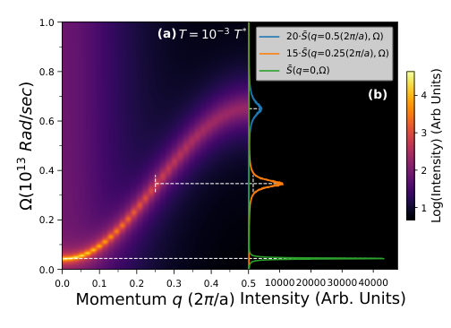
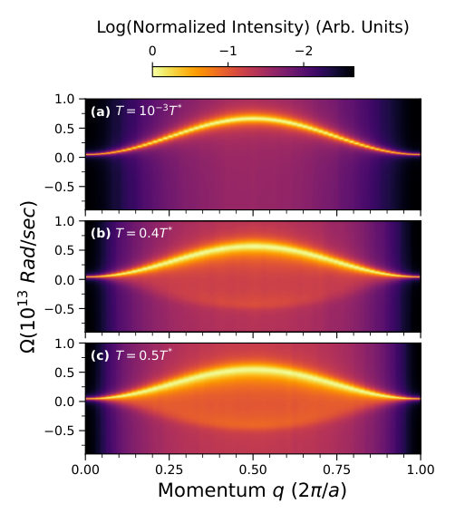
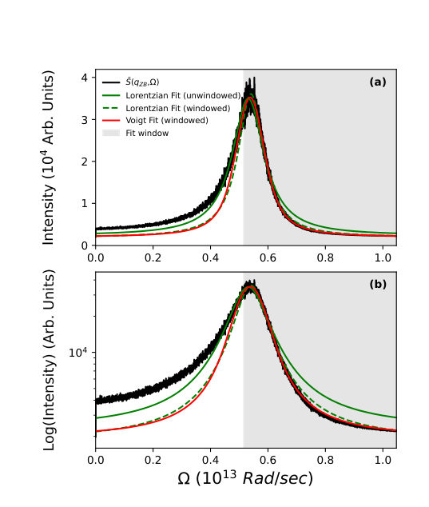
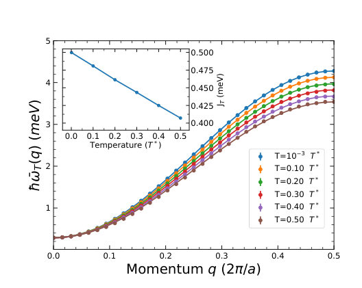
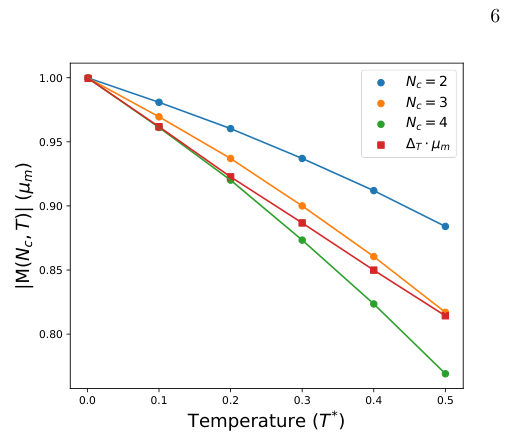
Summary. This paper demonstrates that the effective Gilbert damping in a 1D spin chain is not a constant but changes significantly with temperature and momentum. The researchers show that increased spin wave interactions with local magnetic order at higher temperatures lead to enhanced, momentum-dependent damping.
Why it may be interesting. The study explores how a thermal bath and many-body interactions modify the intrinsic dissipation parameters of a system, which is highly relevant to understanding decoherence and dissipation in open quantum systems.
Main problem. Investigating how temperature and spin wave interactions cause the effective Gilbert damping to deviate from its initial constant value in a 1D spin chain.
Main result. The effective damping increases with temperature and develops momentum dependence due to a transition from quadratic to linear scattering scaling, driven by spin wave interactions with local magnetic order.
Method. Atomistic spin dynamics simulations using the stochastic Landau-Lifshitz-Gilbert equation, with spectral analysis via fitting the dynamical structure factor using Lorentzian and Voigt profiles.
Model / system. A 1D classical Heisenberg spin chain with nearest-neighbor exchange interaction and an external magnetic field, modeled using the stochastic Landau-Lifshitz-Gilbert (sLLG) equation.
Key observables. Spin wave dispersion, scattering rates, dynamical structure factor, and effective Gilbert damping.
Important parameters / regimes. Reduced temperature (T*), exchange interaction (J1), Gilbert damping (alpha), and local order parameter.
Assumptions / limitations. The use of a linearized LLG regime assumes small fluctuations around the quantization axis, and the quasi-particle approximation is used for the scattering analysis.
Figures summary. Figures show the dynamical structure factor at different temperatures, the temperature-dependent softening of spin wave dispersion, the evolution of scattering rates from quadratic to linear scaling, and the emergence of momentum-dependent effective damping.
Paper structure. The paper introduces the problem of temperature-dependent damping, describes the 1D Heisenberg model and sLLG method, presents results on dispersion softening and scattering rate scaling, and concludes with an analysis of the effective damping evolution and anti-magnon dynamics.
Quasi particle based (e.g. Boltzmann equation) studies of spin wave transport often assume that their scattering rates follow the simple form $η=αω$, with the Gilbert damping $α$ and frequency $ω$. In this work, we examine the effective damping $α_{eff,T}=η/ω$ observed in atomistic spin dynamics, when temperature and spin wave interactions are introduced for a 1D spin chain. We extract the dynamical correlation functions from spin trajectories propagated using the stochastic Landau-Lifshitz-Gilbert equation, and fit the dynamical structure factor, yielding the dispersion and scattering rates for a wide range of temperatures. The resulting effective damping can be very different from the initially constant Gilbert value. It exhibits a temperature and crystal momentum scaling which we explain based on interactions with the Gilbert bath and spin wave scattering by changes in local magnetic order.
Authors: Parul Sharma, Sobhan Subhra Mishra, Yash Gupta, Brijesh Kumar, Ranjan Singh, Abhishek Kumar, Anshuman Kumar
Type: experiment · Category: other · PDF: https://arxiv.org/pdf/2605.07702v1
Analysis basis: abstract only; PDF text extraction failed or PDF unavailable
Topic relevance: non-equilibrium dynamics 3/5 · driven-dissipative phase transition 2/5 · quantum optics experiment 2/5
Summary. The researchers demonstrated a way to dynamically control topological exceptional points in a THz metasurface using light-induced changes in germanium. By adjusting the delay between a pump and probe pulse, they achieved ultrafast switching of optical modes in less than a picosecond. This provides a new platform for high-speed, reconfigurable optical technologies and tunable polarization control.
Why it may be interesting. This work is highly relevant to quantum optics and open quantum systems as it demonstrates the dynamic manipulation of non-Hermitian topology and the observation of topological phase accumulation in a real-time, ultrafast regime.
Main problem. Achieving active, ultrafast control and switching of topological exceptional points (EPs) in non-Hermitian photonic systems.
Main result. Demonstrated sub-picosecond eigenmode switching and complete time-resolved EP encirclement within 2 ps using pump-probe delay in the THz regime.
Method. Using optically excited germanium (Ge) as an active medium and exploiting pump-probe delay as a continuous tuning parameter to manipulate the system's topology.
Model / system. A non-Hermitian metasurface composed of germanium (Ge) operating in the terahertz (THz) frequency range.
Key observables. Asymmetric transmission for circularly polarized light, cross-polarization modulation depth, and the Petermann factor.
Important parameters / regimes. Pump-probe delay time, sub-picosecond switching scales (~0.5 ps), and a Petermann factor of approximately 10^3.
Paper structure. The paper introduces the concept of active control in non-Hermitian systems, describes the experimental setup using Ge-based metasurfaces, presents the results of time-resolved EP encirclement and topological phase accumulation, and concludes with the implications for high-speed THz photonics.
Active control and ultrafast switching of non-Hermitian photonic systems are essential for next-generation reconfigurable optical technologies. Here, we demonstrate dynamic temporal manipulation of EPs in the terahertz (THz) regime using optically excited germanium (Ge) as an active medium. By exploiting pump-probe delay as a continuous tuning parameter, we achieve sub-picosecond eigenmode switching (~0.5 ps) and realize a complete time-resolved EP encirclement within ~2 ps, enabling direct observation of topological phase accumulation. At EP, the metasurface exhibits highly asymmetric transmission for circularly polarized light, characteristic of chiral mode response. Furthermore, we observe ultrafast eigenmode switching and topological phase evolution within ~1 ps, achieving >99% cross-polarization modulation depth. The measured results show strong agreement with theoretical modeling, with a high Petermann factor of approximately 10^3, confirming the effectiveness of the design. Our work establishes pump-probe delay time as a dynamical control parameter for EP topology, introducing a new regime of ultrafast non-Hermitian photonics for high-speed switching, enhanced sensitivity, and tunable polarization control in the THz domain.
Authors: Yu-Wen Xu, Xiaolin Wan, Zi-Ming Wang, Rui Wang, Dong-Hui Xu
Type: theory · Category: other · PDF: https://arxiv.org/pdf/2605.07190v1
Analysis basis: abstract only; PDF text extraction failed or PDF unavailable
Topic relevance: non-equilibrium dynamics 3/5
Summary. This paper shows that by applying both strain and oblique circularly polarized light to graphene, one can create a Floquet second-order topological insulator. This phase is unique because it features protected corner modes despite having gapped edges. The study provides a tunable platform for exploring higher-order topological physics in a realistic material.
Why it may be interesting. not directly relevant
Main problem. The study aims to find a controllable way to realize Floquet higher-order topological insulator phases in graphene using light and strain.
Main result. The authors demonstrate that combining uniaxial strain with off-resonant circularly polarized light at oblique incidence stabilizes a Floquet second-order topological insulator phase characterized by gapped edges and robust corner modes.
Method. The researchers use a strained honeycomb tight-binding model with Peierls coupling and a high-frequency expansion for the effective Floquet Hamiltonian, supplemented by first-principles-informed tight-binding calculations.
Model / system. The system is graphene under uniaxial strain, subjected to off-resonant circularly polarized light with a tunable incidence angle.
Key observables. Chern number and a crystalline-symmetry-quantized polarization invariant.
Important parameters / regimes. Uniaxial strain, light incidence angle (oblique incidence), and the transition to the Dirac-merging (semi-Dirac) critical regime.
Assumptions / limitations. The study utilizes a high-frequency expansion for the effective Floquet Hamiltonian, implying the driving frequency is much larger than the relevant energy scales.
Paper structure. The paper introduces the concept of Floquet band engineering in graphene, presents a theoretical model involving strain and light, analyzes the resulting topological phases and invariants, and validates the findings with first-principles-informed calculations.
Graphene provides a canonical setting for Floquet band engineering, where circularly polarized light can dynamically open topological gaps at Dirac points and generate nonequilibrium Hall responses. Here we show that uniaxial strain and off-resonant circularly polarized light with tunable incidence angle enable a controllable route to Floquet higher-order topology in graphene. Using a strained honeycomb tight-binding model with Peierls coupling and a high-frequency expansion for the effective Floquet Hamiltonian, we find that strain drives the Dirac cones toward the Dirac-merging (semi-Dirac) critical regime, where the light-induced mass becomes strongly anisotropic. For oblique incidence, the projected drive is effectively elliptically polarized and, in combination with strain, stabilizes a phase with gapped edges but robust in-gap corner modes in finite geometries, realizing a Floquet second-order topological insulator. We characterize the phase diagram via the Chern number and a crystalline-symmetry-quantized polarization invariant. Finally, first-principles-informed tight-binding calculations corroborate the predicted topological evolution in strained graphene nanostructures. Our results identify driven strained graphene as a realistic and tunable platform for realizing and diagnosing Floquet higher-order topological phases.
Authors: Timur Pryadilin, Alexey Kavokin, Baptiste Coquinot
Type: theory · Category: other · PDF: https://arxiv.org/pdf/2605.07539v1
Analysis basis: full PDF text, analyzed in chunks
Topic relevance: Frenkel-Kontorova 2/5 · Keldysh / 2PI / non-Gaussian methods 2/5 · non-equilibrium dynamics 1/5
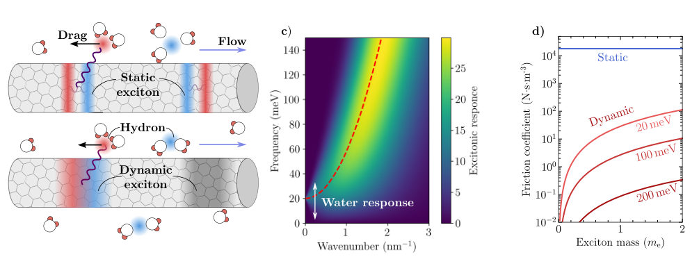
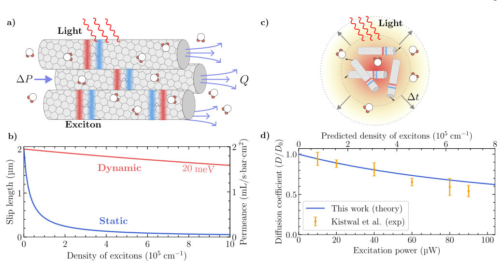
Summary. This paper proposes a way to use light to control how liquids flow through tiny channels by manipulating the friction between the liquid and the channel walls via excitons. It provides a quantitative theory that explains how optical excitation can reduce the diffusion of nanotubes in water, suggesting that light can act as a remote-control switch for nanofluidic transport.
Why it may be interesting. not directly relevant
Main problem. Understanding and controlling the mechanism of solid-liquid friction at the nanoscale using optical excitation, specifically how excitons can tune the friction between water and solid nanochannels.
Main result. The authors develop a microscopic theory showing that optically generated excitons (both static and dynamic) increase interfacial friction, which can be used to optically control nanofluidic transport and probe flow velocity.
Method. The study uses a microscopic theoretical framework based on perturbation theory, Keldysh formalism, and the spectral overlap of exciton and water response functions, combined with Slender Body Theory for hydrodynamics.
Model / system. The system consists of liquid (water) interacting with solid nanochannels, specifically carbon nanotubes. The model includes two exciton types: static (localized with permanent dipoles) and dynamic (mobile, polarized by electric fields).
Key observables. Interfacial friction coefficient, slip length, hydraulic permeability, nanotube diffusion coefficient, and excitonic photoluminescence.
Important parameters / regimes. Exciton density, nanotube radius, exciton effective mass, transition energy, water response function, and slip length.
Assumptions / limitations. Assumes low exciton density (Boltzmann limit), uses a planar approximation for the nanotube response, and assumes the water response is radially symmetric.
Figures summary. Fig 1 shows sketches of friction mechanisms for static and dynamic excitons and the exciton response function. Fig 2 illustrates exciton-mediated permeance and compares predicted slip length and membrane permeance.
Paper structure. The paper introduces the problem of nanofluidic control, develops the microscopic theory for static and dynamic exciton-mediated friction, validates the model against experimental diffusion data, and discusses implications for optical probing of flow.
Interfacial friction in nanofluidic systems can arise from fluctuation-induced coupling between liquid charge fluctuations and the internal excitations of the confining solid. Here, we develop a microscopic theory of exciton-mediated solid-liquid friction based on the coupling between optically generated excitons and charge fluctuations in water. We distinguish between static excitons, localized by disorder or functionalization, and dynamic excitons, which interact with water through polarization fluctuations. In both cases, we derive analytical formulas for the excitonic friction, which is experimentally tunable and can significantly reduce the slip length and thereby the hydraulic permeability of nanochannels. Applying our framework to carbon nanotubes, we quantitatively reproduce the recent measurements of Kistwal et al., showing a reduction of nanotube diffusion under optical excitation, without fitting parameters. More broadly, our results establish excitons as a mechanism to optically control nanofluidic transport and suggest that excitonic photoluminescence could provide an optical probe of flow velocity inside nanochannels.
Authors: Haoran Chen, Wenqin Chen, Kaijie Yang, Ting Cao, Di Xiao
Type: theory · Category: other · PDF: https://arxiv.org/pdf/2605.06983v1
Analysis basis: full PDF text, analyzed in chunks
Topic relevance: Keldysh / 2PI / non-Gaussian methods 2/5 · spintronics-quantum-optics interface 2/5
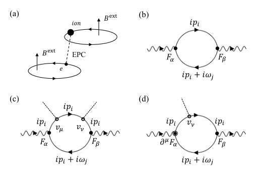
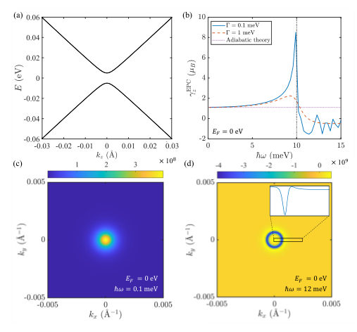
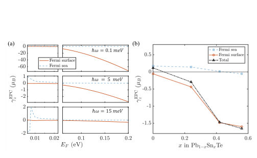
Summary. This paper presents a new theoretical framework for calculating phonon magnetic moments in both insulating and metallic regimes. It identifies that nonadiabatic processes and Fermi-surface contributions are essential to explain the large magnetic moments observed in experiments. The theory provides a unified approach that goes beyond the limitations of previous adiabatic models.
Why it may be interesting. not directly relevant
Main problem. Existing adiabatic theories of phonon magnetic moments fail to explain experimental observations in metals and doped semiconductors, particularly regarding the magnitude of moments and frequency-dependent effects.
Main result. The authors develop a unified nonadiabatic theory that captures both Fermi-sea and Fermi-surface contributions, successfully reproducing the Bohr magneton scale of magnetic moments observed in Pb1-xSnxTe.
Method. The study employs linear response theory, a gauge-covariant Wigner expansion, and Green's function formalism with Matsubara frequency summation.
Model / system. The theory applies to both insulators and metals, with a specific application to the topological crystalline insulator Pb1-xSnxTe using a massive anisotropic k.p model.
Key observables. Phonon magnetic moments, chiral phonon splitting, and the frequency-dependent anti-Hermitian matrix G(q, omega).
Important parameters / regimes. Phonon frequency, energy gap, Fermi level, Sn concentration, and electron linewidth.
Assumptions / limitations. The framework uses the harmonic approximation and does not yet incorporate anharmonic phonon effects.
Figures summary. Figure 1 shows the mechanism of phonon coupling to magnetic fields; Figure 2 compares the new frequency-dependent formula to adiabatic theory; Figure 3 shows the dependence of contributions on the Fermi level.
Paper structure. The paper introduces the problem of phonon magnetic moments, develops a gauge-invariant nonadiabatic formalism using Wigner expansion, applies the theory to a k.p model for Pb1-xSnxTe, and validates the results against experimental observations.
We develop a nonadiabatic theory of phonon magnetic moments applicable to both insulators and metals. By relating the phonon magnetic moment to the force-velocity response of ions in a magnetic field, we derive a gauge-invariant expression using a gauge-covariant Wigner expansion. The formalism naturally separates Fermi-sea and Fermi-surface contributions and captures the full dependence on phonon frequency. In gapped systems, our theory reduces to previous adiabatic expressions in the low-frequency limit. Beyond this limit, it reveals additional contributions arising from resonant interband processes and the Fermi surface. Applying our theory to Pb$_{1-x}$Sn$_x$Te, we find that the Fermi-surface contribution substantially enhances the phonon magnetic moment, reproducing the same order of magnitude as the experimental observation. Our results provide a unified framework for describing phonon magnetic moments beyond the adiabatic regime.
Authors: Arnold Gaje, Lulu Li, Felipe A. Garcés-Pineda, Camilo A. Mesa, Ghazaleh Abdolhosseini, Aditya K. Kushwaha, Dora Zalka, Elzbieta Trzop, Nicolas Godin, Raffaella Torchio, María Escudero-Escribano, Eric Collet, Sixto Giménez, Niels Keller, José Ramón Galán-Mascarós, Núria López, Ernest Pastor
Type: both · Category: strongly correlated electrons · PDF: https://arxiv.org/pdf/2605.07437v1
Analysis basis: full PDF text, analyzed in chunks
Topic relevance: non-equilibrium dynamics 2/5 · spintronics-quantum-optics interface 2/5
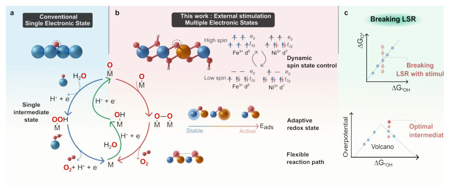
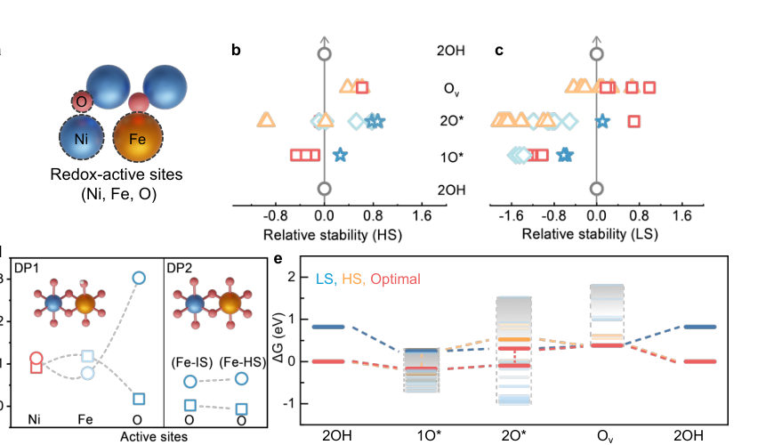
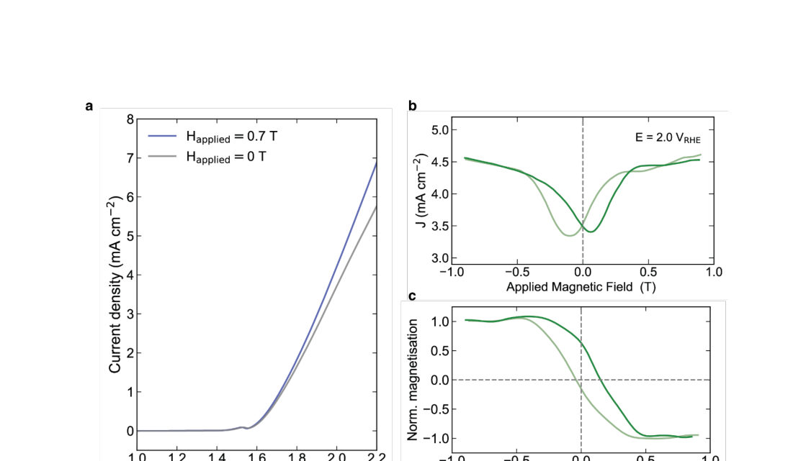
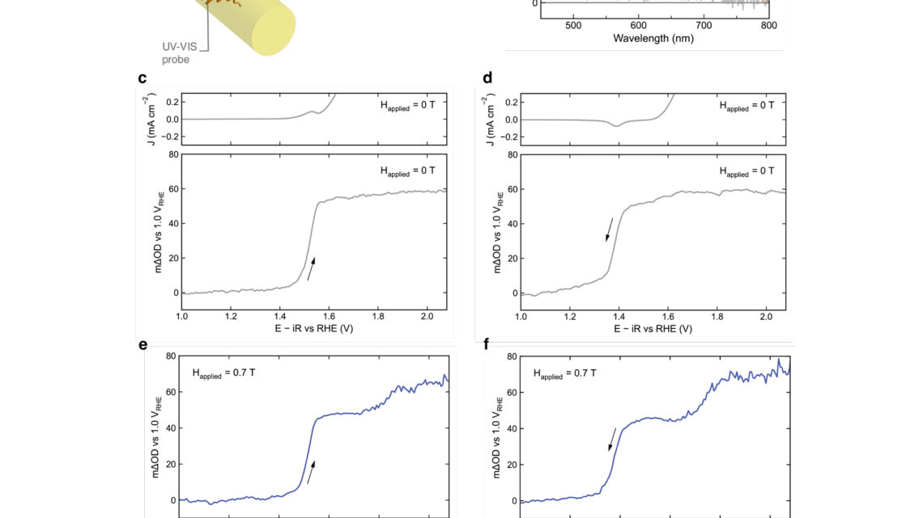
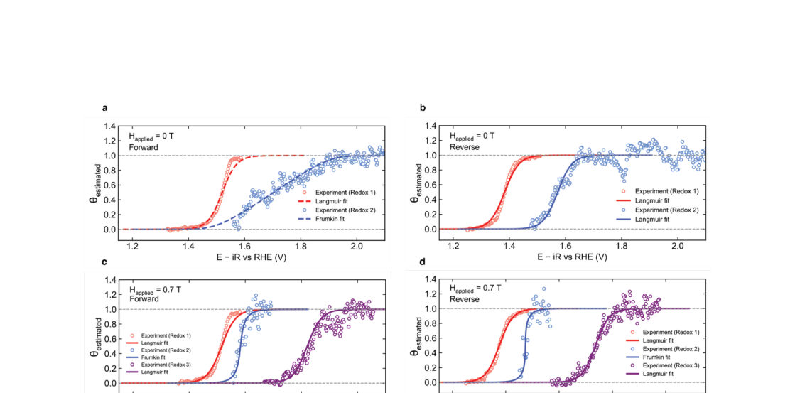
Summary. This paper shows that applying a magnetic field to Ni-Fe oxyhydroxide catalysts can break the fundamental scaling limits of the oxygen evolution reaction. By leveraging spin-lattice coupling, the magnetic field stabilizes new intermediates and reduces repulsive interactions between adsorbates, providing a new strategy for tuning catalytic efficiency.
Why it may be interesting. The paper demonstrates how an external magnetic field can manipulate the energy landscape of a many-body system by controlling spin-lattice coupling, which is relevant to understanding how external drives can navigate complex, multi-state energy landscapes.
Main problem. The study aims to overcome the linear-scaling relationship (LSR) in the oxygen evolution reaction (OER), which prevents the independent optimization of reaction intermediates and sets a minimum overpotential.
Main result. Applying an external magnetic field induces spin-lattice coupling that relaxes scaling relationships by stabilizing new oxyl intermediates and shifting lateral adsorbate interactions from repulsive to attractive.
Method. The researchers combined in-situ UV-Vis spectroelectrochemistry, X-ray absorption spectroscopy (XAS), and magneto-optical Faraday response measurements with Density Functional Theory (DFT) simulations.
Model / system. The physical system is a Ni-Fe oxyhydroxide (NiFe-OOH) electrocatalyst in an alkaline electrolyte, modeled using Langmuir and Frumkin isotherms to describe adsorbate coverage and lateral interactions.
Key observables. Current density (j), differential optical absorbance (delta OD), surface coverage (theta), redox potentials (V_RHE), and magnetic-optical Faraday response.
Important parameters / regimes. Magnetic field strength (up to 0.7 T), pH (13), interaction energy (r), and oxidation states of Ni and Fe.
Assumptions / limitations. The study assumes that the observed changes in the electrochemical response can be directly attributed to the modulation of spin-state energetics and spin-lattice coupling.
Figures summary. Figure 1 compares conventional vs. stimulated catalysis; Figure 2 shows spin-state energy landscapes and DFT-predicted overpotentials; Figure 3 displays current-voltage responses and magnetic field dependence; Figure 4 shows the in-situ detection setup; Figures S15-S18 present Langmuir and Frumkin isotherm fits.
Paper structure. The paper introduces the problem of scaling relations, presents the experimental setup for magneto-electrocatalysis, details the spectroscopic and XAS findings regarding redox transitions, uses DFT to explain the spin-state energetics, and concludes with the implications for adaptive adsorption.
A major challenge in electrochemistry is to decouple the reactive intermediates of a catalytic cycle to optimise their energies independently. During the oxygen evolution reaction (OER), such energy interdependence results from the need to generate multiple adsorbates at the same site and sets the minimum overpotential. Here, we show that an external stimulus, such as a magnetic field, can relax the scaling relationships between intermediates during the OER. Spectroscopic measurements and Density Functional Theory simulations in Ni-Fe oxyhydroxides reveal that applying a magnetic field alters surface chemisorption and injects structural flexibility at the interface. We interpret these observations as a consequence of stimulated changes in the spin-lattice coupling, which allow access to quasi-degenerate oxygenated intermediates that modulate the reaction energy demands. Our findings redefine the scaling limitations as state-projected rather than intrinsic and establish external stimulation as a strategy to navigate multi-state energy landscapes in electrocatalysis and sensing applications.
← Index · ← Previous · Next →